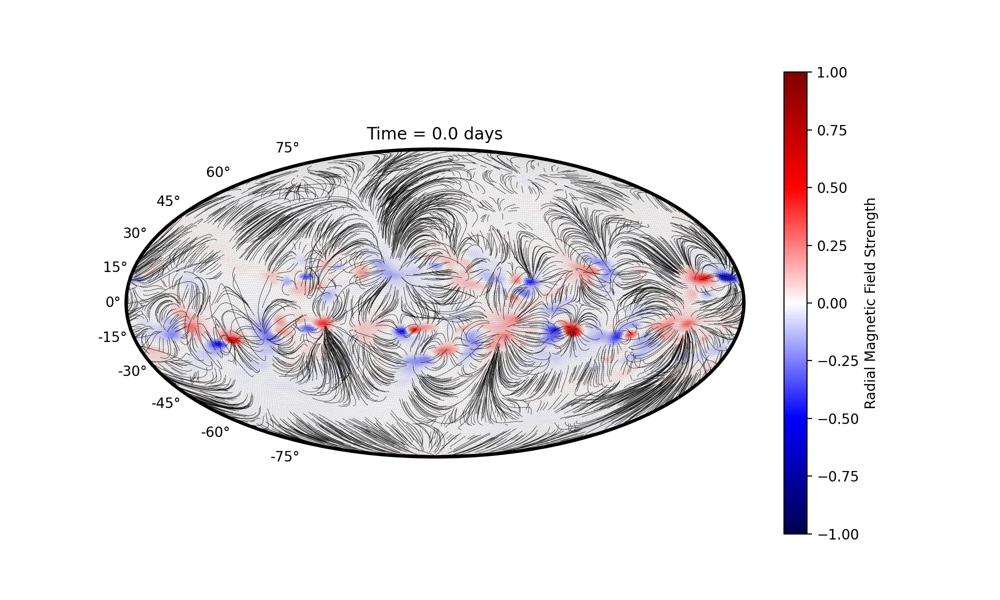
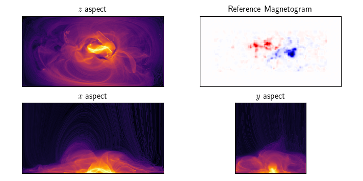

Until recently I was research associate at Durham University, working with Dr. Chris Prior on solar coronal magnetic field modelling. I completed my PhD in 2024 under Prof. Anthony Yeates. My main research is in magnetohydrodynamic and magnetofrictional modelling of the Sun's magnetic field. In particular, I focus on the potential prediction of magnetic flux ropes in the solar corona. I have used existing code (LARE2D) and my own Fortran 90 models to run very large parameter studies of magnetic field behviour, along with a new semi-analytic model for steady-state coronal magnetic fields. Ultimately, my hope is that this research can be used to improve space weather predictions by providing better estimates for when magnetic flux ropes become unstable and erupt. I have recently been focusing on new methods to extrapolate a quasi-static magnetic field from observations of active regions, with the aim of studying the effects of including (or not) the chromosphere in these models.
Research Summary
Outflow fields
In an attempt to improve the initial conditions of some of our simulations, we have developed a new method to model the global Solar Corona (see the below picture). The paper has been published in the Astrophysical Journal, and is available here. These new 'outflow fields' have numerous advantages over the traditional alternative (PFSS), namely that the upper corona is no longer current-free but is stretched outwards by the effect of the solar wind. These fields are now being used as the default initial condition for the DumFric global magnetofrictional code.

Flux Rope Behaviour Predictions
We have used 2.5D simulations to undertake an extensive (several thousand simulations) parameter study in an attempt to find correlations between the probability of an eruption and various scalar diagnostics. We have discovered several indicators of eruptivity that are consistent across the entire parameter space - the best of which predicted eruptions with greater than 90% accuracy. The previously proposed 'eruptivty index' was not found to be remarkably good, but we have proposed a variation on this that performs very well in both magnetofriction (MF) and magnetohydrodynamic (MHD) simulations. We have also observed consistency between the instabilities in both MF and MHD, providing credence to the use of magnetofriction for modelling such eruptions. Here is a video of one our MHD simulations (including an eruption).
This research has been published in two parts. The first, published in the Frontiers journal, can be found here. The second paper is a considerable improvement upon this, as it includes MHD simulations and the new eruptivity index definition. This was published in the Astrophysical Journal, and is available here. This research has won the UKSP (UK Solar Physics) poster prize in 2022, and the UKSP special prize in 2023. I was invited to write an article in Astronomy and Geophysics as a result, which can (with a bit of faff) be found here.
A New Magnetofrictional Code
For the last year or so I have been focusing on writing an entirely new magnetofrictional code. This will model the entire corona, and unlike previous codes will employ an icosahedral grid - with trianglular rather than rectangular grid cells. This is intended to avoid problems around the poles which currently result in unrealistic relaxation rates. The hope is that this code can be used to verfiy the results of our 2.5D studies, and be used to determine how the scalar quantities could be measured in reality. Here is a brief video of some uninteresting results.
Active Region Modelling with Automated Boundary Driving
In my recent postdoc I have been focusing on the effects of including a dense boundary layer representing the chromosphere in coronal magnetic field models. We have found that in general the presence of such a layer delays the eruption of magnetic flux ropes, irrespectively of if they are formed using pure boundary driving or by flux emergence. One of the most interesting things to come out of this research is a new method to model active regions using magnetofriction, using an automated boundary driving routine which precisely matches the in-plane helicity and the radial magnetic field (shown in the image above for Active Region 11318).
Future Work
The results of our parameter study have not yet been shown to be valid in full 3D. To acheive this, we will need to perform a large parameter study in 3D, which is computationally expensive but hopefully doable, especially using magnetofriction. 3D analogues of the proposed eruptivity index can then be determined, most probably using the field-line helicity to some extent. It then remains to determine how these quantities need to be adjusted for the real corona, and the difficulties of extrapolating magnetic field structures from available observations. At which point it should be possible to make some predictions!